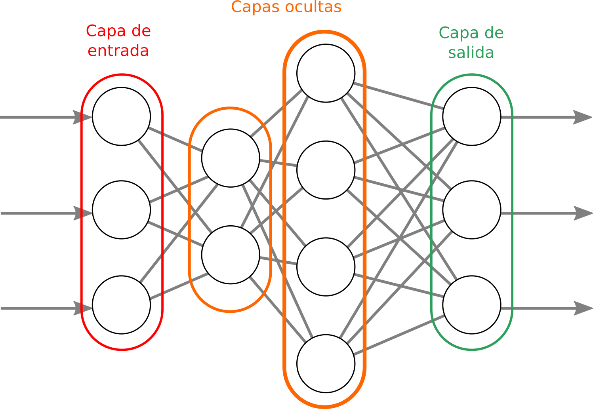

Deep Learning y su increíble impacto en la realidad conocida
Gary Stephen Girón Molina
gsteph393@gmail.com
Estudiante de Ingeniería en Ciencias y Sistemas - USAC
Palabras clave: Deep Learning, inteligencia artificial, sociedad, futuro, redes neuronales, realidad aumentada
Si bien hoy en día las necesidades de las personas no se ven colapsadas por algún fallo en los sistemas actuales para suplirlas, el constante cambio y aumento de información siguen concentrando y cargando a grados extremos las diferentes herramientas que se utilizan, una cantidad de datos que sería imposible poder analizar sin lo que hoy se nos ha provisto, Big Data, Analytics, entre otros.
El surgimiento de lo que hoy conocemos como inteligencia artificial fue la misma causa que nos ha llevado hasta este punto, se ha requerido proporcionar una toma de decisiones y un análisis de información de forma precisa y optima, esto con el fin de evitar toda complejidad que exista dentro de la administración de recursos en todo proceso u operación, por lo cual es necesario tener un concepto amplio de la base que ha llevado a técnicas como Deep Learning a su existencia.
Inteligencia Artificial
Como definición formal es una rama de las ciencias de computación que se dedican a resolver problemas que no son algorítmicos, mediante las herramientas que se disponen en la misma ciencia, sin tomar en consideración la forma del razonamiento subyacente a todas aquellas técnicas que sean aceptables para lograr dicha resolución, si desglosamos las palabras tenemos que inteligencia es aquella capacidad de entender, analizar, y crear información para luego utilizarla de forma adecuada, por lo cual podemos decir que inteligencia artificial es la capacidad de las máquinas y demás dispositivos de aprender, con la cual tenemos tres técnicas principales, las cuales son:
Programación Heurística: Esta basada en el modelo del comportamiento del ser humano, en conjunto con su respectiva forma de buscar problemas.
Redes Neuronales: Es una representación abstracta de cómo funciona el modelo cerebral del ser humano.
Evolución Artificial: Es una técnica de control del software sobre sí mismo.
Redes Neuronales
Su concepto las identifica como redes interconectadas de forma paralela, por medio de las unidades mínimas, que tienen las características de simplicidad, adaptabilidad y su respectiva jerarquía.
Una red neuronal consta de una capa de entrada, una cantidad determinada de capas ocultas y una capa de salida en la cual devuelve la solución esperada como se puede apreciar en la Imagen 1.

Autor: blogdiario Dirección electrónica de la imagen: Enlace
{kind=link}
El uso de las redes neuronales tiene muchas ventajas, entre ellas tenemos:
Lenguaje Adaptativo: Es la habilidad que se posee de realizar las actividades a través de la misma experiencia o entrenamiento.
Autoorganización: Es capaz de realizar su propia organización o modelo de la información que recibe en la etapa de aprendizaje.
Tolerancia a fallo: algunas capacidades a pesar de sufrir un gran daño se pueden retener en la red.
Operación en tiempo real: La utilización de paralelismo
Fácil inserción dentro de la tecnología existente: Se pueden usar chips para aumentar su capacidad y rendimiento.
La estructura de las redes neuronales es compuesta por unidades básicas mínimas conocidas como neuronas, las cuales se pueden describir fácilmente como las neuronas biológicas de nuestro cuerpo.
Deep Learning
Esta técnica se basa en un conjunto de algoritmos de tipo aprendizaje automático (como su predecesor Machine Learning), los cuales intentan modelar las diferentes abstracciones de alto nivel mediante el uso de arquitecturas de transformaciones no lineales, se diferencia de una simple red neuronal debido a la cantidad de capas ocultas que posee como se observa en la Imagen 2.
 Autor: Ackstorm managed Cloud Solutions
Dirección electrónica de la imagen: Enlace
Autor: Ackstorm managed Cloud Solutions
Dirección electrónica de la imagen: Enlace
{kind=link}
Una de las características importantes y que tienen mayor relevancia en el cambio al cual se afronta la sociedad es el enfoque de Deep Learning donde la única intervención humana en su proceso es la programación, luego de ello, esta aprende de sí misma para solventar sus errores, caso contrario del Machine Lerning que actualmente hoy vemos, ya que aunque recibe una entrada, lo clasifica por si misma para dar una salida, una solución, es necesario que una persona realice la extracción de características y vaya guiando el procedimiento, mientras esta guía o trabajo lo reduciría Deep Learning para trabajar y aprender por sí misma como muestra la Imagen 3.
 Autor: The Startup
Autor: The Startup
Dirección electrónica de la imagen: Enlace
Para obtener una red funcional en nuestro Aprendizaje Profundo o Deep Learning, debemos considerar cuantas capas vamos a incluir y cuantas neuronas estarán disponibles en cada capa, esto se realiza de forma arbitraria, tomando en cuenta que entre más capas o neuronas por capa se usen, mayor será la complejidad de problemas que lograra resolver, pero de la misma manera, de forma proporcional es más complicado de manejar o realizar, luego de ello se considera el peso concreto que se usara entre cada par de conexiones.
Luego de comprender los conceptos generales y algunas especificaciones podemos considerar el punto inicial, ¿cómo afecta al mundo en que vivimos?, la realidad como la conocemos, ¿en qué resiente el cambio y dependencia de estas tecnologías?
Impacto de Deep Learning en la sociedad
Deep Learning supone un cambio en gran parte de la realidad que conocemos, uno de los ejemplos claros en los que actualmente se utiliza este tipo de técnicas, es en el reconocimiento de imágenes, donde la misma se brinda como entrada y cada pixel es enviado a una cantidad arbitraria de neuronas en las capas ocultas para su procesamiento y análisis, así al finalizar tener nuestro resultado según las especificaciones para lo que se diseñó la herramienta y los resultados no algorítmicos de las operaciones que se generaron entre los pesos ponderados de las conexiones entre las neuronas recorridas hasta llegar al resultado, un ejemplo claro es la forma en que Facebook logra identificar los rostros en las fotografías que se suben a la red, así como asociarlo a un perfil al cual se podría etiquetar.
La idea del reconocimiento facial adjudicado a nuevas tecnologías como el Internet de las cosas, donde cada dispositivo, cada cámara u objeto en el cual sea posible recabar información está conectado a la red y el respectivo análisis y almacenamiento de Big Data en la nube complementarían herramientas de reconocimiento a nivel mundial, en la cual se ubique todo sobre la faz de la tierra en cuestión de segundos, en el peor de los escenarios minutos con solo estar a la vista de algún dispositivo.
Deep Learning revolucionaria otros campos de la misma manera como la forma en que nos vemos inmersos en nuestra vida. ¿Cuántas veces hemos estado en un tráfico interminable? ¿Cuál sería el cambio si el mismo vehículo pudiera conducirse y tomar sus propias decisiones para llevarnos a nuestro destino deseado?
El tiempo se aprovecharía de mayor manera, la frustración que conlleva las horas y horas perdidas en el tráfico se solucionarían, pero a la vez gradualmente estaríamos dependiendo más de los artefactos de nuestro entorno, actualmente personajes reconocidos como Steve Wosniak en entrevistas recientes han declarado que tienen fe en tecnologías emergentes como las que se mencionaban anteriormente, el reconocimiento de voz y otras, actualmente nos encontramos en una transición que nos lleva a un mundo del cual solo tenemos la esencia inicial, uno que al momento de fallar la tecnología en la cual está basado podría significar un desastre debido a que las condiciones de vida no serían las conocidas por cada individuo.
Conclusiones:
La realidad que conocemos está definida por los ejes en los cuales se basa nuestra forma de vivir.
Deep Learning sugiere algún problema a gran escala en la sociedad, debido a la renuencia al impacto que generarían dichas tecnologías.
Conforme las necesidades del ser humano aumentan, es necesario tener un cambio que logre suplir dichas necesidades.
Actualmente nos encontramos en una transición que nos lleva a una sociedad desarrollada que logre optimizar factores como el tiempo.
Entre más nos trasladamos a un mundo virtualizado, más dependemos de dicha tecnología.
Un fallo de las bases de la sociedad provocaría un desastre debido a la falta de conocimiento de la forma de vida que esto implicaría.
Referencias: